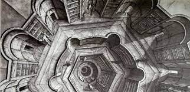
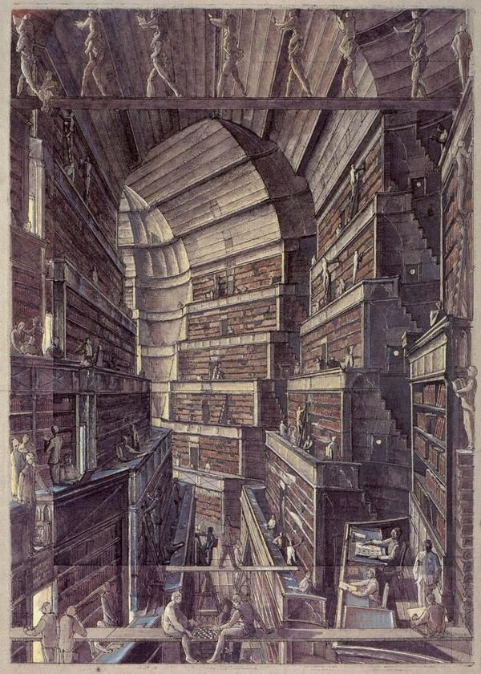

Conceptul lui Jorge Borges are la bază un univers sub forma unei vaste biblioteci care conține toate cărțile posibile. După spusele lui Borges, „Universul (pe care unii îl numesc bibliotecă) se compune dintr-un număr infinit şi poate nedefinit de coridoare hexagonale, cu largi puţuri de ventilaţie în mijloc”

Rătăcirea omului prin viaţă, căutarea cunoaşterii, divinităţii sau măcar a unui sens al lucrurilor este transpusă de Borges sub forma bâjbâielii bibliotecarilor, generaţie după generaţie, prin nesfârşitele coridoare, în încercarea de a înţelege secretele bibliotecii. Aici sunt toate cărţile şi toate negaţiile lor, aici sunt toate răspunsurile la toate întrebările doar că nu se ştie exact în ce raft, din ce hol, aşa încât, cu toate posibilităţile la îndemână, oamenii nu pot găsi decât soluţii limitate şi răspunsuri care sunt adesea erezii.
Există, se zvoneşte, şi o carte totală, care e rezumatul tuturor cărţilor şi care l-ar face pe cel ce ar citi-o asemenea zeilor. Universul e o bibliotecă în care omul, ba nu, omenirea, nu găseşte răspunsuri, ci doar noi întrebări, în care rătăceşte adesea, sperând că va descoperi, în aparenta dezordine, un pattern care să indice o ordine. Borges afirmă „Singurătatea mea se mulţumeşte cu această elegantă speranţă”.
